|
BATERÍA DE TERRARIOS REALIZADA CON MATERIALES DE OBRA. ALOJAMIENTOS
DE INTERIOR.
Fernando Pérez, 2007
En este artículo mostraremos como
realizar una batería de terrarios construida con materiales de obra.
La principal característica de estos recintos consiste en su
durabilidad, bajo coste en comparación con los resultados finales,
facilidad de limpieza y estética agradable para observar a nuestros
animales.
Los que llevamos ya algunos años inmersos en el mantenimiento de
tortugas terrestres en cautividad sabemos lo costoso que puede
resultar a veces adquirir terrarios de gran tamaño o recintos
artificiales de interior para mantener a nuestros animales. Siempre
intentando buscar alojamientos de gran tamaño, con alturas y anchuras
difíciles de encontrar en el mercado especialista en reptiles, además
de ser bastante costoso buscar quién pueda fabricarlos.
Si disponemos de bastante espacio en algún lugar de nuestra vivienda
(garajes, trasteros o habitación destinada a nuestra afición) podemos
utilizar este tipo de construcciones garantizando que la resistencia y
durabilidad de la misma será eficiente durante mucho tiempo. Al fin y
al cabo las tortugas son animales con una media de vida larga así que
realizar este tipo de recintos nos hará disfrutar de nuestra afición a
largo plazo.
Para la realización de esta batería de terrarios he utilizado
ladrillos de 8 agujeros, conocidos dentro de los materiales de
construcción como ladrillos de tabique. Son ladrillos más largos y
anchos que los normales haciendo más fácil la realización del montaje
y ahorrando trabajo a la hora de construirlo.
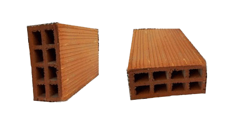
Estos ladrillos tienen un tamaño de
8cm de grosor, 18cm de altura y 25cm de anchura.
Para realizar el tabicado de los
recintos utilizaremos mortero en sacos de 25 kilos. El mortero es una
mezcla de cemento, arena y ceniza que se diluye con agua en una
espuerta, con batidora o manualmente, logrando una masa igual que el
cemento normal y con las mismas características de agarre. La
principal ventaja de este producto es su facilidad de manejo a la hora
de realizar una obra interior, no teniendo que utilizar cemento, arena
y agua para realizar hormigón como en cualquier construcción
ordinaria. Su coste no es demasiado elevado ya que no deberemos
adquirir gran número de sacos e individualmente su precio nunca excede
de los 3 Euros.
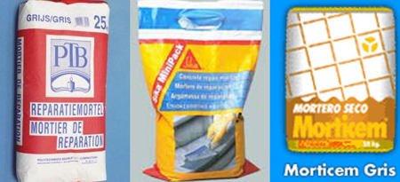
Existen numerosas marcas de morteros
en el mercado de la construcción.
Para el techo/suelo de la batería, de dos pisos de altura,
utilizaremos placas de ladrillo machihembrado de 90cm de largo por
25cm de ancho. Este material es muy utilizado en construcciones para
edificar techos, suelos y otras innumerables opciones. En el mercado
se pueden encontrar machihembrados de 60, 80, 90, 100 y 120 cm de
largura, siempre con una anchura de 25cm. Son medidas estándar y
podremos adaptarnos dependiendo la anchura total que queramos dar a la
batería. El machihembrado tiene como principal característica que
puede ser ensamblado horizontalmente con lo que es ideal para crear
superficies, ya sean suelos o techos.
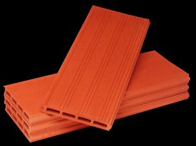
Imagen de machiembrado
El primer paso para la construcción del
alojamiento consiste en replantear la zona donde va a ser construido.
En este caso particular la anchura de la batería será de 3,40 metros
para así al dividirlo en dos partes quedando dos alojamientos de 1,60
metros aproximadamente con un fondo de 90cm.
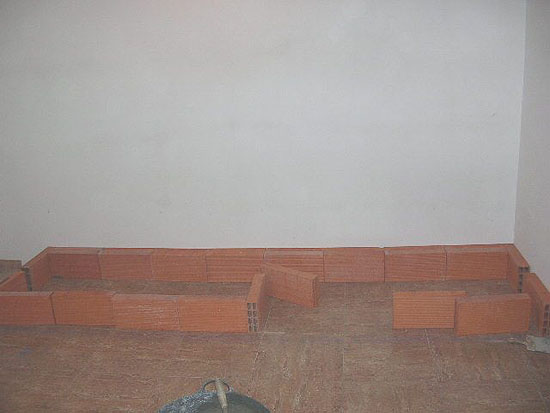
Tras haber replanteado los ladrillos y
tener claro la forma final de la construcción, empezaremos a pegar
estos al suelo con la masa de mortero. En este caso utilizamos la
pared de la habitación del garaje para sostener el tabique de fondo,
adosando los ladrillos a suelo y pared para crear la base.
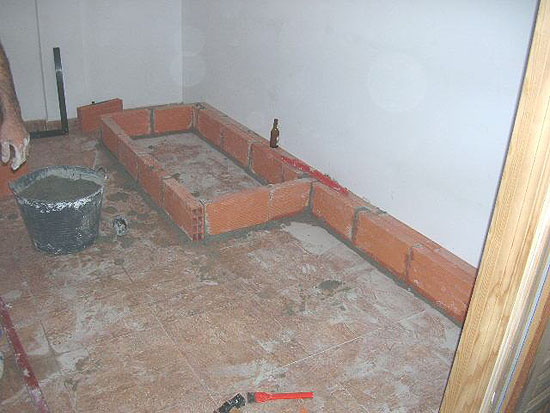
Justo en la mitad del rectángulo
cruzamos dos ladrillos para darle más fuerza a la unión del tabicado.
Para que los dos primeros terrarios no queden a la misma altura que el
suelo crearemos la superficie de estos justo encima de la primera
hilera de ladrillos. De esta manera el acceso a los recintos quedará
más alto y más cómodo para poder manipular a los animales, vegetación,
substrato, etc.
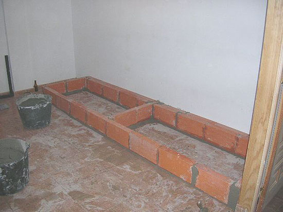
Es el momento de colocar la primera
hilera de machihembrados para así crear el suelo de los dos primeros
alojamientos. Es bastante fácil ir uniendo los machihembrados mediante
la muesca (macho/hembra), con el mortero fijaremos los mismos a la
primera hilera de ladrillos.
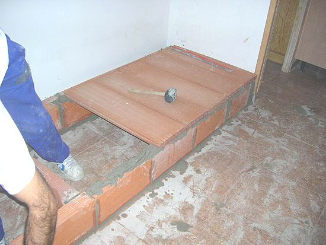
Deberemos utilizar el nivel para
concretar que todos los machihembrados están perfectamente alineados.
Repellaremos con mortero todos los huecos existentes y ya tendremos
acabado el soporte donde irá construida la batería de alojamientos.
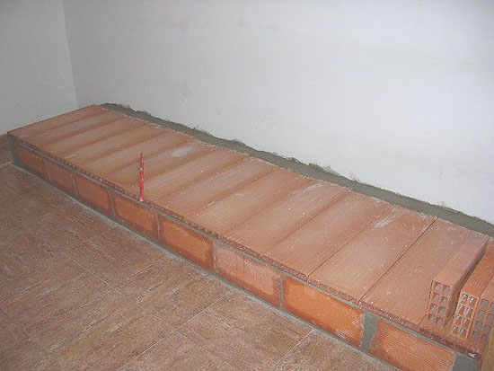
A partir de ahora empezaremos a colocar
los ladrillos para ir dando forma al primer piso de terrarios.
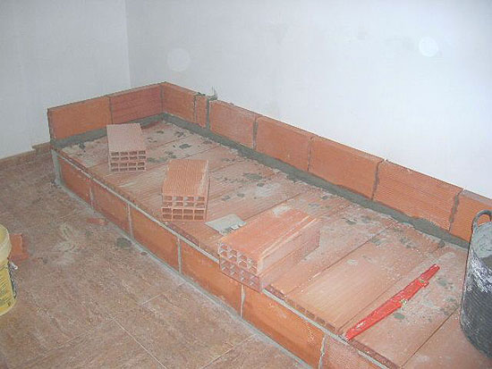
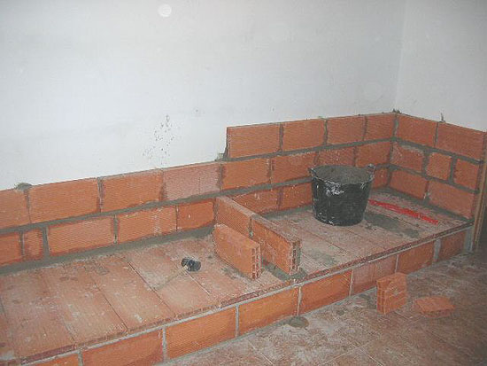
Seguiremos pegando con el mortero filas
de ladrillos. En el centro de la construcción iremos delimitando las
dos partes que serán finalmente los recintos artificiales.
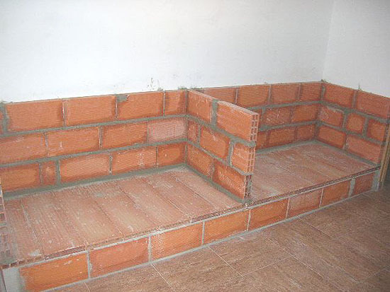
En la imagen superior observamos ya
terminada la primera fase de la batería. Se han utilizado tres filas
de ladrillos para dar una altura a los recintos de unos 75cm. El muro
que divide ambos recintos hace que tengamos dos superficies de 1,60
metros por 1 metro de anchura.
Es el momento de enchapar con azulejos
el interior de los recintos de la zona baja. Pensamos que es mejor
hacer este trabajo ahora que al acabar definitivamente la
construcción, ya que podemos manejarnos mejor que si lo hiciéramos con
todo el tabicado terminado. Para las paredes de los alojamientos
utilizamos azulejos de 40x40cm, imitación piedra, que darán un aspecto
favorecedor al resultado final. En el suelo colocaremos azulejos
normales (no importa el color o tamaño ya que serán tapados por el
substrato. Aunque el instalarlos dará más limpieza a los recintos que
si lo dejáramos sin enchapar.
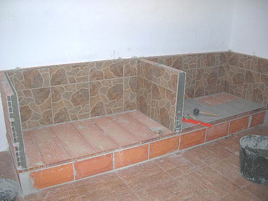
Para pegar los azulejos a los ladrillos
hay que utilizar cemento cola, que al igual que el mortero, hay que
trabajarlo en una espuerta con agua hasta obtener una masa homogénea
para su perfecto rendimiento. El cemento cola hay que aplicarlo con
una plana dentada en la parte trasera de los azulejos, nivelar y con
una masa de goma golpear hasta que estén bien anclados y perfectamente
nivelados unos con otros. Su precio nunca supera los 6 euros por cada
saco de 25 kilos.
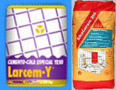
El cemento cola es un producto fácil
de encontrar en tiendas o almacenes de construcción.
Para realizar el segundo piso
utilizaremos un ángulo de hierro de 60/70 u 80 mm. En este caso
particular he usado un perfil angular de hierro de 60mm, abarcando la
largura total del alojamiento. Descansando en las tres paredes del
recinto, será lo suficientemente fuerte como para aguantar el peso del
suelo y el resto de la batería. Para no tener que incluir demasiadas
imágenes, os muestro como he realizado este procedimiento en el
segundo piso del alojamiento.
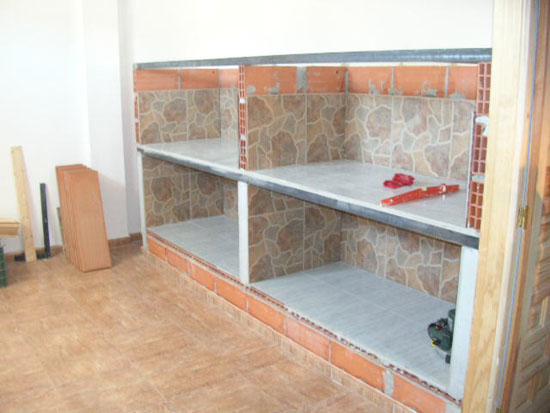
El perfil de hierro será el que sujete a
los machihembrados tanto en el techo final de la batería como en el
techo/superficie de la zona intermedia. El machihembrado se sujeta al
hierro y a los ladrillos de fondo, utilizando el mortero para que la
sujeción agarre sin problemas. Este tipo de ángulo puede soportar más
de 2.000 kilos de peso así que es una garantía fiable para poder
realizar este tipo de construcción.
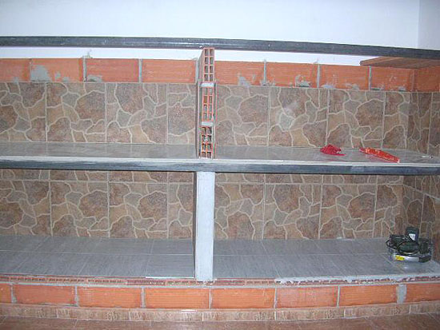
Poco a poco vamos colocando los
machihembrados y uniéndolos a los ladrillos posteriores y al ángulo de
hierro. Como observamos en la imagen inferior, el techo está listo
rápidamente. Estos pasos han sido iguales a los realizados en el
primer piso de la batería. Iniciando, tras esta operación, la
colocación de tres hileras más de ladrillos (igual que el primer piso)
y enchapando el mismo para así ahorrar esfuerzos. (Si dejáramos el
enchapado para cuando los techos estuvieran listos nos constaría más
trabajo trabajar en la batería.)
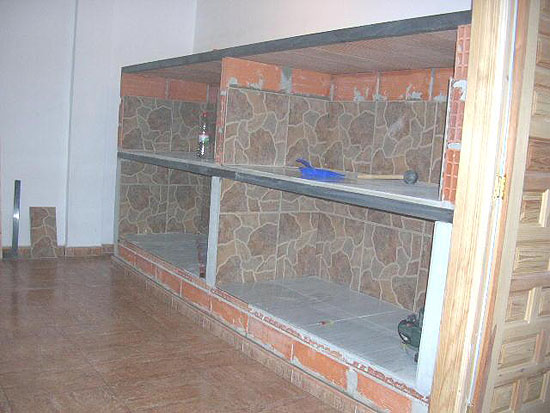
El techo final de la batería es
enchapado en azulejos para que sirva como estantería y sea cómodo de
limpiar. Con el azulejo para las paredes imitación piedra, se acaba de
enchapar la zona alta de los terrarios así como los frontales del
mismo. La zona baja de los machihembrados o techo de los alojamientos
es repellada para luego ser pintada y poder colocar los elementos de
iluminación.
Una máquina de corte de azulejos es indispensable para poder realizar
todos los cortes en las placas de azulejo con total garantías. También
se puede utilizar una radial pequeña pero la calidad de corte es mucho
mayor con la primera.
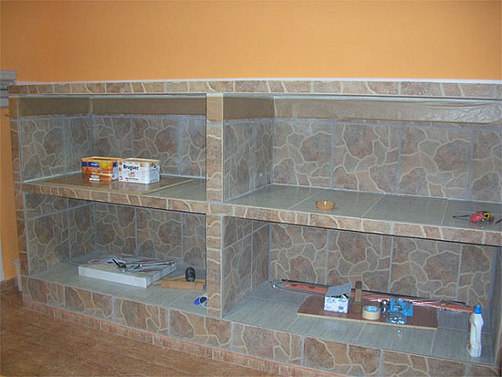
La iluminación que aportaré a cada
recinto consiste en lámpara Power Sun® y foco de soleamiento (lámpara
halógena de 60watios) o calorífico (lámpara infrarrojos). Se pueden
utilizar cualquiera de las combinaciones posibles dependiendo de la
época en la que nos encontremos o las exigencias que necesitemos para
la especie a mantener.
En este caso he utilizado para la lámpara Power Sun® un plafón de 35cm
de diámetro por unos 20cm de altura. De esta manera se garantiza que
la luz que emite la lámpara de espectro total no nos molestará a la
hora de observar los animales o manipular el terrario. La pantalla ha
sido modificada instalando casquillo de cerámica y haciendo una pieza
especial de anclaje para poder colocarla sin problemas en el techo del
alojamiento.
Para el foco de soleamiento o calefacción nocturna (dependiendo las
exigencias) he utilizando flexos extensores de mesa que se pueden
encontrar en cualquier tienda de electricidad. Les he quitado el pie y
han sido anclados a la pared trasera del recinto utilizando únicamente
la parte final del flexo. El casquillo también es cerámico para evitar
sobrecalentamientos inoportunos.
El cableado eléctrico proveniente de las lámparas es sacado por la
parte posterior de la batería y llevado a un interruptor con reloj que
mantiene el ciclo lumínico necesario. Cada lámpara lleva un cable de
2.00 mm de grosor por línea, para evitar ningún tipo de problema con
las lámparas de espectro total o las halógenas/infrarrojos.
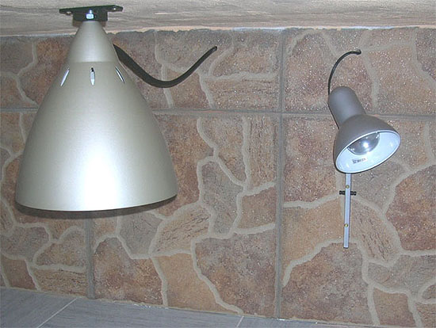
Una vez instalados y probados los focos
y pantallas, coloco unas regletas de madera en los suelos y laterales
de los alojamientos. Sobre ellas van a ir pegados los cristales para
poder observar los animales y acabar la batería. La altura será de
unos 30cm para colocar el cristal. Con la forma de U el cristal tendrá
tres puntos de sujeción, suficientes para anclarlo con total
garantías.
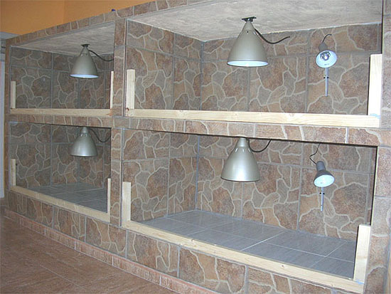
Para unir las regletas de madera (6 cm
anchura del listón) utilizo masilla de un solo componente de la marca
Sikaflex®. Con ella la sujeción de los listones está más que
asegurada, ya que es un componente que aguanta sin problemas la
radiación ultravioleta, humedad y pega con una sujeción descomunal
todo tipo de materiales (siempre que sean materiales porosos, al menos
uno de ellos).
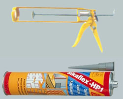
Masilla sikaflex® y pistola para su
aplicación.
Una vez dejados los tiempos de secado
para que los listones queden totalmente sujetos a las paredes y suelo
de los alojamientos, se procede a instalar el cristal. El vidrio
utilizado es cristal laminado en dos capas de 3mm para garantizar la
dureza del mismo, evitando así romperse con un fuerte golpe. Los
cristales laminados garantizan que al recibir un impacto nunca se
rompen, ya que al estar pegados entre ellos no se destruyen tan
fácilmente, como mucho se resquebrajan. Así nos aseguramos no tener
accidentes.
El pegado de los cristales a la madera la realiza el cristalero
encargado de esta labor. Utiliza un pegamento especial para adherir
vidrio y madera, garantizando que la unión es fuerte y duradera.
Para terminar de enlucir la U donde están instalados los cristales y
que no se vean imperfecciones o pegamento, pego tapajuntas de pino de
6cm de ancho con Sikaflex®.
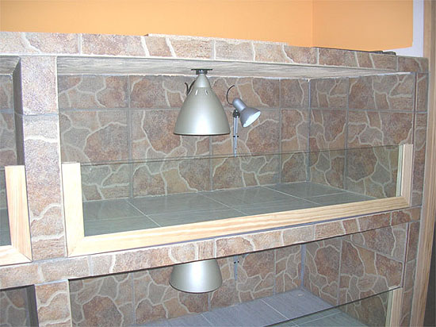
Mencionar que para que el tapajuntas de
pino quede a la misma superficie que los laterales de los
alojamientos, los listones de madera iniciales fueron anclados
pensando en los grosores del vidrio y tapajuntas.
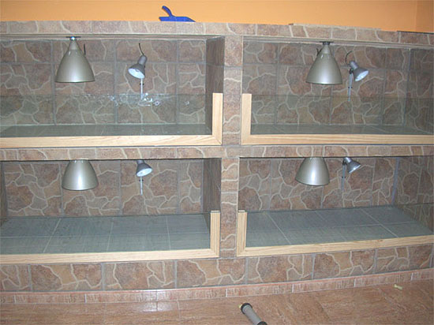
Una vez finalizados todos los pasos,
relleno de substrato los cuatro alojamientos que componen la batería
de construcción, decorándolos según la especie a mantener.
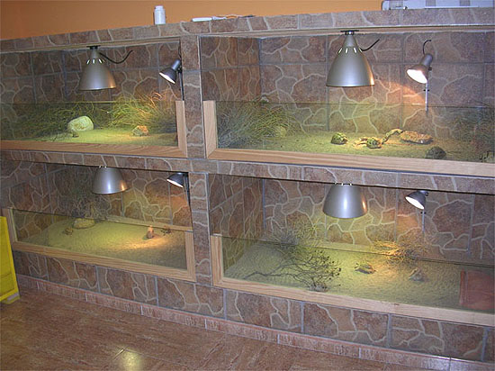
Substrato, matorral, refugios, piedras y
animales darán el aspecto final a la batería.
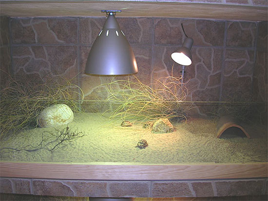
Los alojamientos serán destinados al
mantenimiento de Testudo kleinmanni (Tortuga egipcia). Las dimensiones
finales de los recintos y las temperaturas necesarias para esta
especie hacen inmejorable este tipo de alojamientos.
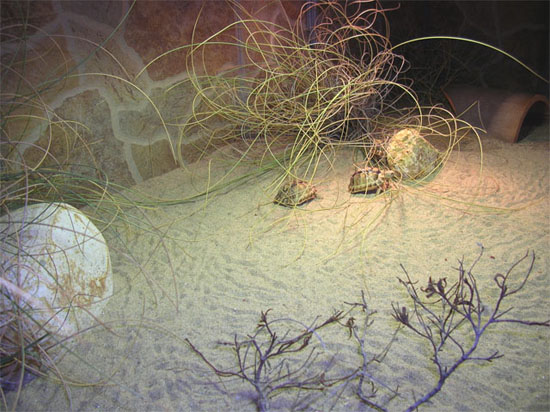
La imagen final con todos los terrarios
en funcionamiento.
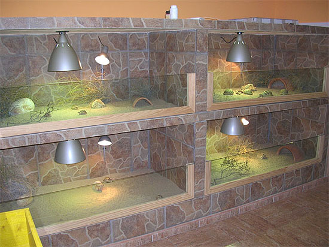
Espero que este artículo sirva para dar ideas a criadores, aficionados
y amantes a las tortugas terrestres. El costo final de la construcción
es ínfima en comparación con lo que nos hubiese costado comprar
alojamientos de este tamaño, bien sea buscando en tiendas
especialistas en el ramo o buscando profesionales que nos los
realizaran en cualquier otro material, incluso madera. Eso sí, algún
dolorcillo de espalda y agujetas en nuestro cuerpo serán la recompensa
de semejante habitáculo.
|